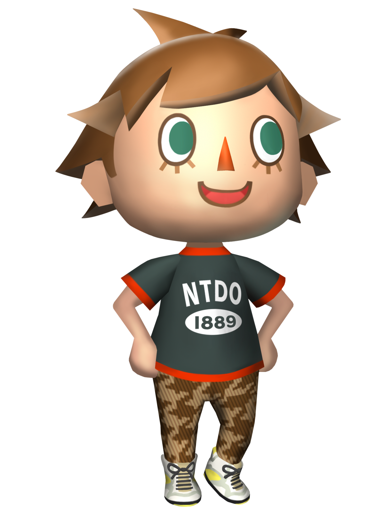

El aldeano
El jugador, también conocido como aldeano, es el personaje representativo del Jugador principal de la serie. Es el personaje que manejarás durante tu vida en el pueblo, realizando las acciones principales de este, como cazar y pescar, regar, pagar la hipoteca.
Personalizar nuestro aldeano
La personalización de nuestro aldeano es bastante completa. A medida que vamos avanzando en el juego podremos cambiar distintos aspectos de nuestro aldeano.
Podemos personalizar el tono de piel, el peinado, el color de pelo, los accesorios y la ropa.